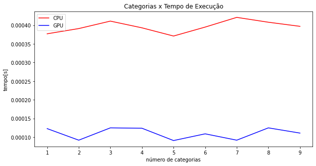

Todos os códigos expostos nesse relatório podem ser acessados em: https://github.com/BrunoFNRodrigues/supercomp-projeto.git
Implementação:
As heurísticas, gananciosa e aleatória, foram implementadas seguindo a seguinte lógica:
- Tratamento das entradas
- Aplicação das heurísticas
- Tratamento dos resultados
Tratamento das entradas:
A formatação esperada para o arquivo de input é na primeira linha quantidade de filmes quantidade de categorias, a segunda linha ser número de a quantidade de filmes em cada categoria e as demais linhas os filmes com hora que começa, hora que acaba e categoria.
Assim as entradas foram tratadas seguindo a lógica do código abaixo, para ambas as heurísticas:
A lógica consiste em ler o arquivo em loop e gravar as entradas no vetor lista, se o valor de início for menor ou igual que o do fim ela não sofre alteração, no caso contrário o valor de fim dela e modificado para 24, o ajuste é realizado dessa forma, pois filmes que ultrapassem o limite de um dia a parte dele que passou limite não é considerada para aquele dia de maratona. Caso houvesse mais um dia de maratona esse período seria considerado .
Aplicação das heurísticas:
Para a aplicação da heurística gananciosa o sua invariante é a ordenação do vetor de filmes com base no horário de término, como pode ser visto na imagem abaixo:
Para a aleatória a sua invariante é ter 25% de chance de adicionar um filme qualquer a mais, como está presente no trecho de código abaixo:

Tratamento dos resultados:
A formatação da saída segue a seguinte o lógica, ambos programas imprime no console uma representação da alocação dos filmes no dia e também quais filmes foram escolhidos. Além disso eles salvam os valores de quantidade de filmes, quantidade de categorias, tempo não alocado, tempo de execução e quantidade de filmes alocados em um arquivo csv, o código responsável por isso pode ser visto abaixo:
A saída do terminal a primeira linha pode ser interpretada da seguinte forma, os valores entre [] representam as horas do dia, todos os números diferentes de zero são ids dos filmes e eles representam que a hora do vetor foi preenchida pelo filme com esse id, o zero significa que aquela hora não foi preenchida com nenhum filme. A segunda linha no terminal são os filmes que forma escolhidos.
Profiling:
O profiling da heurísticas gananciosa teve os seguintes pontos de interesse:
O primeiro foi essa chamada de função que totaliza mais 32 milhões de instruções, o ponto que chama a atenção é o volume de instruções, contudo não a muito que possa ser feito para melhorar isso, uma vez que essa chamada de função está associada a leitura dos inputs e estruturação deles em um vetor, o que fundamental para a resolução do problema.
Outro ponto de interesse é a sequência de condições para um filme ser adicionado, principalmente a condição que envolve o valor absoluto da diferença do começo e do fim do filme, O maior número de instruções nesse trecho deve estar associado a o cálculo do valor absoluto.

Por último, um ponto interessante para reparar e essa chamada do método count, que envolve a leitura do completa do vetor, e tendo em vista que ele está dentro de um for pode trazer alguns problemas de desempenho.

Para a heurística aleatória os mesmos pontos assimas se apresentam, com adição do trecho abaixo que apresenta uma situação semelhante a segunda imagem apresentada que possui um valor mais elevado de instruções devido ao cálculo do valor absoluto.

Resultados:
Filmes totais x Filmes vistos:
Observando os gráficos acima é nítido que para a heurística aleatória quantidade de filmes não impacta quantidade filmes vista, enquanto para a gananciosa impacta, contudo apenas até 1000 filmes acima desse valor têm pouca variação.
Categorias x Filmes assistidos:


Agora analisando a quantidade assistida em relação a quantidade de categorias é claro que ambas as heurísticas sem beneficiam de uma maior quantidade de categorias, entretanto a gananciosa tem um benefício maior conseguindo chegar a 24 filmes.
Filmes x Tempo de Execução:

Do ponto de vista do tempo de execução do programas é claro que quanto mais filmes mais tempo demora para executar, isso ocorre para ambas as heurísticas, mas a aleatória sofre com crescimento maior de tempo de execução do que a gananciosa.
Categorias x Tempo de Execução:


Agora analisando o tempo de execução em relação a quantidade de categorias, os resultados mostram que a quantidade de categorias é pouca impactante para ambas as heurísticas, afetando um pouco a gananciosa quando poucas categorias, mas a partir de 8 categorias não ocorrem mudanças significativas, vale ressaltar que a aleatória apresenta uma variação maior de resultados, porém não é apresentado um padrão que indique que a quantidade de categorias esteja afetando de forma positiva ou negativa os resultados.
Busca Exaustiva Paralelizada (OpenMP e Thrust)
Entradas:
Para as soluções exaustivas a formatação da entrada continua a mesma formatação de dois números na primeira linha representada a quantidade de filmes e categorias, a segunda sendo a capacidade de cada categoria e as demais os filmes, sendo representados por três números hora de início, hora de término e categoria, como pode ser visto no exemplo abaixo:
5 4
1 3 2 3
2 6 3
2 5 1
4 7 4
19 23 3
20 0 2
Contudo devido a restrição do tamanho de vetor que um núcleo da GPU suporta as entradas tiveram o seu range de filmes reduzido de 1000 até 49000, para 1 até 30, e de categorias de 1 até 50, para 1 até 9.
Implementação OpenMP:
Tratamento das entradas:
As entradas foram lidas primeiro os valores de filmes foram salvos em n, os de categoria em c, já para os filmes eles foram armazenados em um vetor de nome lista , por meio de um loop, o mesmo foi feito para armazenar os limites de cada categoria, como pode ser visto abaixo:
Aplicação do paralelismo:
A abordagem tomada para resolver o problema de alocação usando OpenMP foi, primeiramente foi criada
uma função recursiva (melhorMaratona) que monta uma árvore de decisão, ou seja, ela cria uma alocação,
na qual o filme foi escolhido e uma que ele não foi, assim sucessivamente até cobrir todas as possibilidades.
Então para a paralelização é criada uma zona paralela em que são criadas 8 threads com e cada thread vai executar
árvore de busca para 1/8 das entradas e essa alocação vai ser salva em um vetor compartilhado pelas threads. Após
as threads terminarem de executar a busca no seu pedaço dos dados, todos os filmes selecionados pelas soluções ótimas
de cada uma são passados para função de busca que agora vai executar em um única thread que vai buscar para ver qual é
a melhor alocação possível para esses filmes. O ponto de inflexão que determina o paralelismo da solução pode ser visto abaixo:

Região paralela do código, ela é declarada recebendo o valor de num_treads que no caso da execução do projeto foi 8. Dentro da zona paralela do código a primeira tarefa realizada foi definir o tamanho do pedaço do vetor original de filmes que cada irá receber além de determinar quanto a última thread irá receber caso tamanho do vetor não seja perfeitamente divisível pelo número de threads, após isso são criados o vetores utilizados para a alocação local para garantir que as soluções individuais não sejam afetadas pelas outras então é chamada a função melhorMaratona, que pode ser vista abaixo, que vai montar uma árvore de decisão para os pedaços dos filmes recebidos pela thread, e por último o resultado da thread e armazenado no vetor resultados. Vale ressaltar que essa implementação analisar vários espaços do problema por vez, cada thread analisa a completude do espaço designado a ela, assim achando o máximo local, logo se toda thread acha o seu máximo local então todos os pontos de máximo são conhecidos, assim é possível saber o máximo global.
Em linhas gerais a função tenta alocar um filme e se a ela conseguir ela chama a si mesma novamente com esse filme ainda pertencendo as escolhas possíveis, abaixo desse checagem há a chamada da função para o caso do filme não fazer parte dos filmes que são possíveis de serem selecionados e por último é checado qual é a melhor solução com ou sem o filme.
Tratamento das saídas:
Após a execução da alocação os dados são salvos em um arquivo csv, sendo as seguintes colunas, quantidade de filmes de entrada, quantidade de categorias de entrada, tempo não consumido, tempo de execução, quantidade de filmes alocados, contudo a coluna de tempo restante não é utilizada, tendo que vista que a métrica mais importante é quantidade filmes visto/alocados ; isso pode ser visto no trecho de código abaixo:
Implementação Thrust:
Tratamento das entradas:
Primeiramente as os números de filmes e categorias foram armazenados nas variáveis N e M, respectivamente, então os limites para cada categoria foi armazenado em um vetor host_L, utilizando um for para a leitura, e seguindo a mesma lógica três vetores foram preenchidos, o host_categories, host_start_times e host_end_times, nos quais foram armazenados os valores de categoria, início e fim de um i-ésimo filme, Assim, por exemplo, para acessar os dados do filme 10, basta acessar a décima posição desses três vetores. A lógica da leitura de dados pode ser observada abaixo:
Aplicação do paralelismo:
A abordagem para solucionar a alocação de filmes utilizando Thrust é através de uma função transform que recebe um vetor com tamanho igual ao número de filmes ao quadrado. O valor de cada posição desse vetor corresponde ao seu índice. Por exemplo, vector[5]=5. Além disso, é utilizado um functor que realiza a alocação dos filmes com base no valor da posição do vetor passado. Por exemplo, se o functor está na posição com o valor 5, ele interpretará esse valor como um número binário, como por exemplo 0101, e irá considerar essa configuração binária como sendo a alocação dos filmes correspondentes. Nesse caso específico, seriam o primeiro e o terceiro filme. Dessa forma, seguindo essa lógica, a GPU realizará esse cálculo para todas as configurações possíveis de filmes. O paralelismo da solução é alcançado através da chamada da função transform com o functor, essa chamada da função transform permite que cada elemento do vetor seja processado em paralelo pela GPU, acelerando o cálculo das diferentes configurações de alocação de filmes, conforme exemplificado abaixo:
A chamada da função Thrust::transform recebe como argumentos o início e fim do vetor sobre o qual as iterações serão realizadas, o início do vetor onde os resultados serão salvos e uma função chamada bestMaraton. Essa função recebe como argumentos as quantidades de filmes e categorias, além de ponteiros para os vetores de horário de início, horário de fim e limites para cada categoria. Esses ponteiros são passados dessa forma porque eles não serão modificados durante a execução da função bestMaraton. Portanto, não representam uma região crítica e podem ser passados como referência sem preocupações de concorrência ou modificação inesperada dos dados. A função Thrust::transform aplicará a função bestMaraton em paralelo a cada elemento do vetor, produzindo os resultados desejados.
O functor responsável pela alocação recebe os argumentos mencionados anteriormente. Primeiramente, ele realiza uma cópia do vetor "L" para realizar a alocação interna sem modificar o vetor original. Em seguida, a alocação é realizada seguindo os mesmos critérios das outras soluções, levando em consideração a disponibilidade da categoria e a ausência de conflitos de horário. Após a conclusão da alocação, o functor retorna a quantidade máxima de filmes alocados. Esse processo garante que a alocação seja feita de forma segura, mantendo a integridade dos dados originais e respeitando os critérios estabelecidos para a alocação dos filmes.
Resultados:
OBS:Os gráficos foram gerados levando em consideração as melhores respostas para cada valor. A execução de cada solução foi realizada de 1 até 30, e para cada filme foram consideradas de 1 até 9 categorias. Essa abordagem pode levantar questionamentos em relação a inconsistências, uma vez que pode ocorrer a comparação de execuções com conjuntos de dados diferentes. No entanto, não é necessária essa preocupação, pois ambas as soluções são exaustivas e testam todas as possibilidades. Se uma determinada entrada é facilmente alocável, isso é verdade para ambas as implementações. Dessa forma, podemos ter confiança de que os resultados refletem as melhores soluções possíveis para cada conjunto de dados testado.
Filmes totais x Filmes vistos:
Como é perceptível pelo gráfico acima, a alocação é impactada positivamente à medida que a quantidade de filmes aumenta. Isso faz sentido, uma vez que é mais provável existir uma alocação ótima quando a quantidade de filmes é maior. No entanto, é notável uma disparidade entre os resultados obtidos pela solução em OpenMP e os obtidos pela solução em Thrust. Isso pode estar ocorrendo devido a inconsistências nas implementações de alocação. O comportamento esperado é que ambas as soluções encontrem a melhor solução possível para aquele conjunto de dados, portanto os resultados deveriam ser os mesmos.
Categorias x Filmes assistidos:
Ao analisar o gráfico acima, fica evidente que a CPU apresentou um crescimento próximo ao logarítmico, enquanto a GPU exibiu um crescimento mais próximo ao linear. Levando em consideração os resultados das implementações anteriores, esperava-se um comportamento mais semelhante à curva observada na solução em CPU. Essa diferença pode estar relacionada ao algoritmo utilizado para analisar as combinações possíveis de filmes.
Filmes x Tempo de Execução:
Em relação ao tempo de execução das soluções, a CPU demonstrou um tempo consistentemente inferior a 1 segundo. Isso ocorre porque o valor de "n" é relativamente baixo, resultando em árvores em cada thread com pouca profundidade e, consequentemente, cálculos mais rápidos. Por outro lado, a GPU exibiu um comportamento semelhante até atingir aproximadamente 25 filmes, momento em que ocorreu um aumento exponencial no tempo de execução. Essa mudança pode ser atribuída ao fato de que os vetores de filmes estão se aproximando do limite de processamento dos núcleos da GPU, o que pode afetar negativamente a manipulação dos dados e resultar em um aumento no tempo necessário para realizar as operações.
Categorias x Tempo de Execução:
A relação de tempo de execução nesse caso, que trata das melhores execuções para cada algoritmo, indica que não há uma grande diferença de tempo entre as propostas. Isso ocorre porque os dados presentes nesses gráficos são provenientes do trecho em que o tempo de execução é inferior a 1 segundo no gráfico de Filmes x Tempo de Execução. Isso é coerente, uma vez que nesse gráfico o tempo de execução é minimizado para cada categoria, considerando uma quantidade de filmes igual ou inferior a 24, evitando problemas relacionados à memória da GPU.